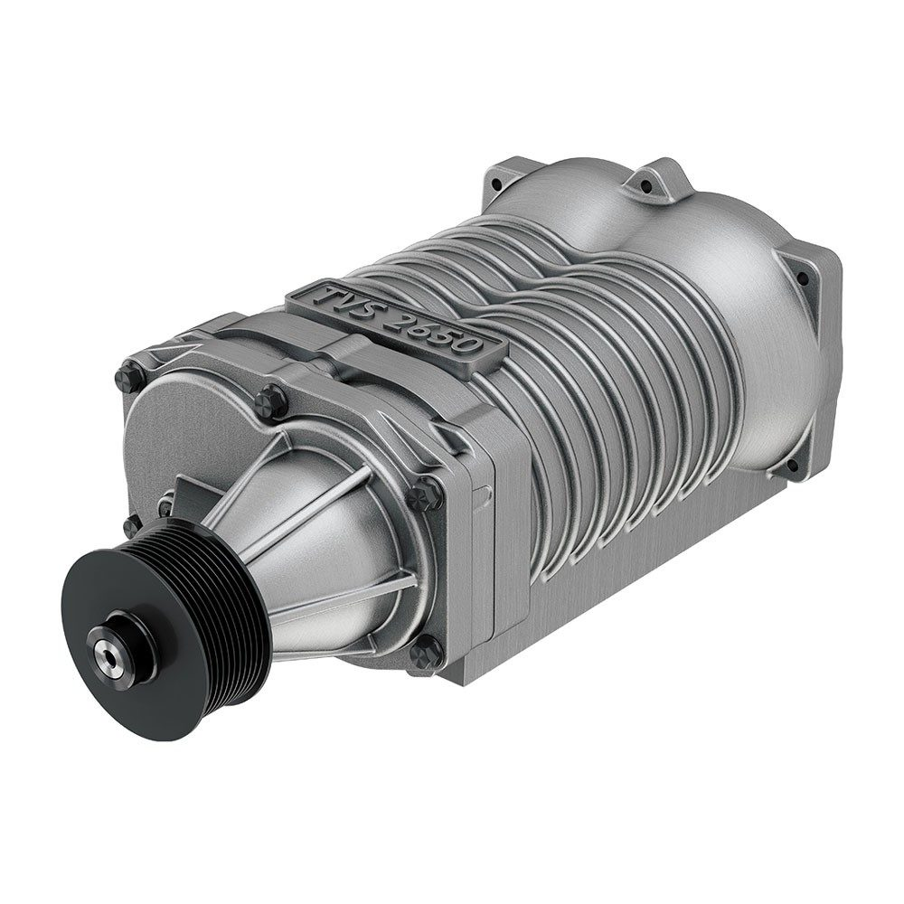

הקדמה
מכונית ספורט היא מכונית מהירה ובעלת מבנה נמוך
לרוב מדובר במכונית בעלת שני מושבים, שתי דלתות, מנוע גדול וחזק
האצה מהירה ובלימה חדה, ללא תא מטען גדול
מכוניות ספורט מתאפיינות בגוף הנבנה מחומרים קלים כמו אלומיניום, פלסטיק וסיבי פחמן אשר מעניקים למכונית מסוג זה ביצועים גבוהים ונהיגה מהנה
מכונית הספורט קרובה למכונית המרוץ, ויצרניות רכב אשר מייצרות דגמי מכוניות ספורט לרוב מייצרות גם מכוניות מרוץ
טורבו:
סופרצארגר - הוא מערכת הדוחסת אוויר למנוע אבל האנרגיה שמפעילה אותו היא אנרגיה של כוח מכני שמגיע מגל הארכובה
מגדש - הוא מערכת שדוחסת אוויר למנוע על בסיס האנרגיה שמייצרת האת הזרימה של גזי הפליטה

סוגי מנועים:
מנוע וי-
מנוע וי - הוא מנוע בו הצילינדרים מסודרים בשני טורים
כאשר הטלטלים מחוברים לגל ארכובה אחד וכל צמד טלטלים נגדי מחובר לארכובה אחת
בין שני טורי הצילינדרים נוצרת זווית בצורת וי מכאן שמו

מנוע בוקסר-
הוא סוג של מנוע בעירה פנימית שבו כל צמד בוכנות מסודר בצורה אופקית בכיוונים הפוכים מימין ומשמאל, בניגוד לתצורות הנפוצות במנועי כלי תחבורה של צילינדרים מקבילים בשורה או צילינדרים המסודרים בתצורת V.
פעולת הבוכנות במנוע זה מדמה אגרופים ה"חובטים" מימין ומשמאל בגל הארכובה, ועל שום כך קיבל המנוע את שמו ("בוקסר" פירושו מתאגרף באנגלית).

מהות הספויילר
ספוילר - מפחית את החיכוך עם הרוח
החלק המוגבה מאפשר לרכב לחתוך את האוויר במקום להתנגש בו, מה שמאפשר לכם להמשיך לנסוע במהירות שבה אתם נוסעים ללא הפרעות חיצוניות מאמא אדמה -זה משפיע מאוד במיוחד בפניות או במהירות גבוהה ומאפשר לכם לקחת כל פנייה בבטיחות
עוזר לך לשמור על יציבות כי הפחתת החיכוך עם האוויר מאפשרת לגלגלים להיצמד לכביש בצורה יותר ואתם לא מושפעים מכל משב רוח ימינה ושמאלה, מה שמן הסתם, תורם מאוד ליציבות של הרכב על הכביש
הזווית המורמת מקנה לאוטו תכונות נוספות של בטיחות וכך הרכב שלכם הופך להיות לא רק יפה, אלא גם יותר חזק מהרוח